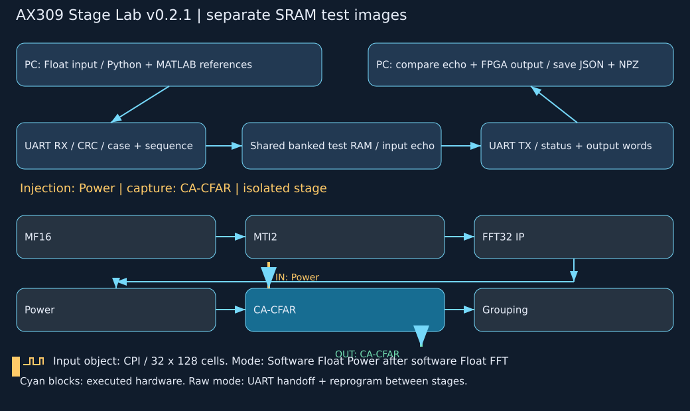
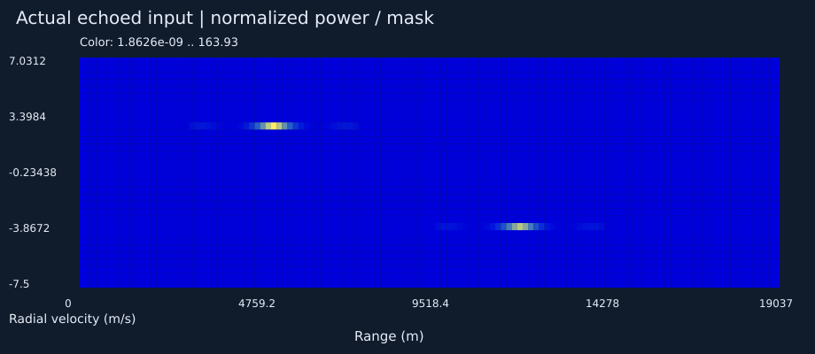
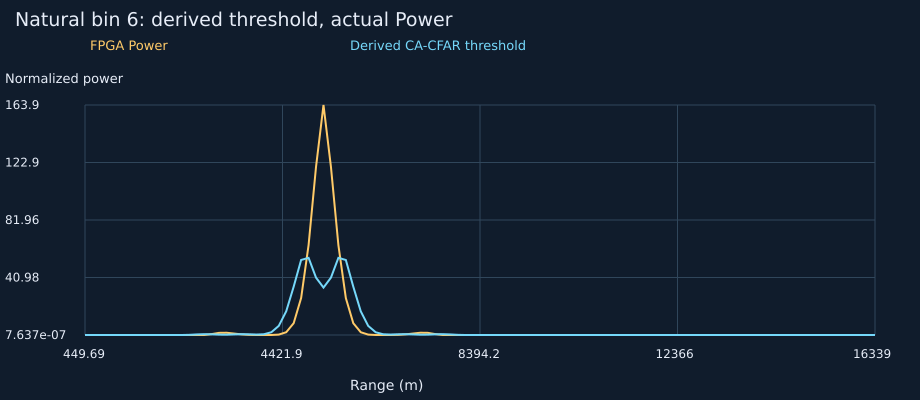

آستانه زیر از نقشه توان و ضریب ثابت CFAR بازسازی شده است؛ رجیستر آستانه از FPGA خوانده نشده است. ماسک بالا واقعاً از FPGA دریافت شده است.

| مرجع | معیار | مقدار |
|---|---|---|
| Python Float | decision_mismatches | 0 |
| Python Float | extra_alarms_vs_reference | 0 |
| Python Float | missing_alarms_vs_reference | 0 |
| Python Float | valid_CUTs | 2782 |
| Python Float | exact_decisions | 1 |
| Python Fixed | decision_mismatches | 0 |
| Python Fixed | extra_alarms_vs_reference | 0 |
| Python Fixed | missing_alarms_vs_reference | 0 |
| Python Fixed | valid_CUTs | 2782 |
| Python Fixed | exact_decisions | 1 |
| MATLAB Fixed | decision_mismatches | 0 |
| MATLAB Fixed | extra_alarms_vs_reference | 0 |
| MATLAB Fixed | missing_alarms_vs_reference | 0 |
| MATLAB Fixed | valid_CUTs | 2782 |
| MATLAB Fixed | exact_decisions | 1 |